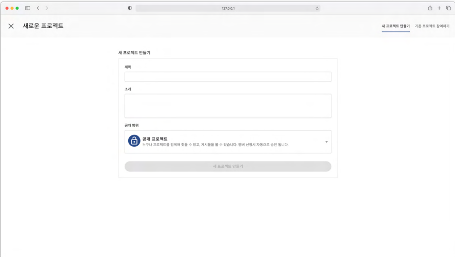

프로젝트 관리
새 프로젝트 만들기
새로운 프로젝트를 생성하려면 오른쪽 위에 있는 프로젝트 생성 버튼을 클릭합니다.

프로젝트를 생성하는 화면이 표출됩니다. 프로젝트에 대한 제목, 소개, 공개 범위를 설정합니다.
여기서 공개 범위는 다음과 같이 설정할 수 있습니다.

공개 프로젝트 : 내가 만든 프로젝트를 다른 사람들이 검색하여 찾을 수 있고, 참여하기를 통해 게시물 등 프로젝트 내용을 볼 수 있습니다.
팁
내가 만든 프로젝트를 다른사람이 참여하면 게시물을 볼 수만 있고 편집할 수 있는 권한은 없습니다.
기본적으로 게시물 추가·수정·삭제하는 권한은 주어지지 않습니다.
차후 이러한 권한을 부여할 수 있습니다.
비공개 프로젝트 : 내가 만든 프로젝트를 다른 사람들이 검색하여 찾을 수 있지만, 게시물 등 프로젝트 내용은 내가 승인한 사람들만 볼 수 있습니다.
비밀 프로젝트 : 내가 만든 프로젝트를 다른 사람들이 검색하여 찾을 수 없고, 게시물 등 프로젝트 내용 역시 나만 볼 수 있습니다.
프로젝트 설정을 완료하였다면 저장버튼을 누르면 다음과 같이 프로젝트를 생성된 것을 확인할 수 있습니다.

기존 프로젝트 참여하기
다른 사람이 만든 프로젝트에 참여하려면 프로젝트 생성화면에서 오른쪽 상단에 기존 프로젝트 참여하기 를 클릭합니다.

다음과 같이 다른사람이 만든 프로젝트들을 볼 수 있습니다.